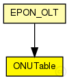
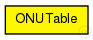

This documentation is released under the Creative Commons license
This documentation is released under the Creative Commons licenseTODO auto-generated module
The following diagram shows usage relationships between types. Unresolved types are missing from the diagram. 
The following diagram shows inheritance relationships for this type. Unresolved types are missing from the diagram. 
If a module type shows up more than once, that means it has been defined in more than one NED file.
| EPON_OLT (compound module) |
TODO auto-generated module |
| Name | Value | Description |
|---|---|---|
| display | i=block/table |
// // TODO auto-generated module // simple ONUTable { @display("i=block/table"); }
This documentation is released under the Creative Commons license